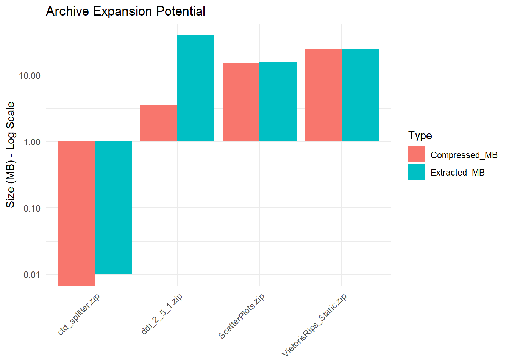

Code
# install.packages(c("tidyverse", "archive", "fs", "rstudioapi"))Curators often receive data packaged in containers like ZIP, TAR, or 7-Zip. While convenient for transfer, these formats are “black boxes” that hide potential preservation risks.
“Peek” inside compressed containers without full extraction. Our objective is to inventory contents, verify file integrity, and identify nested structures to ensure all data remains discoverable and accessible.
Archives are prone to bit-rot; a single corrupted bit in a solid archive can render the entire dataset unreadable. Furthermore, “Zip Bombs” can crash curation workstations, and nested archives often defy automated indexing systems.
This notebook uses the archive package to assess:
We use the archive package, which is a robust binding to the industry-standard libarchive C library.
If you do not have the required packages, run this command once in your R console:
# install.packages(c("tidyverse", "archive", "fs", "rstudioapi"))library(tidyverse)
library(archive) # The engine for reading archives
library(fs) # File system tools
library(rstudioapi)Select the folder containing the TiFF files.
Note: If running interactively, a dialog box will appear. Otherwise, it defaults to the target_dir parameter.
if (interactive() && .Platform$OS.type == "windows") {
selected_dir <- rstudioapi::selectDirectory(caption = "Select TIFF Directory")
} else {
selected_dir <- NULL
}
if (!is.null(selected_dir)) {
target_dir <- selected_dir
} else {
target_dir <- params$target_dir
}
print(paste("Analyzing directory:", target_dir))[1] "Analyzing directory: data/Inspect_Containers/"We scan for .tif and .tiff files.
# Find archives (zip, tar, gz, 7z, rar)
archive_files <- list.files(
path = target_dir,
pattern = "\\.(zip|tar|tar\\.gz|tgz|7z|rar)$",
recursive = TRUE,
full.names = TRUE,
ignore.case = TRUE
)
if (length(archive_files) == 0) {
stop("No archive files found in this folder.")
}
print(paste("Found", length(archive_files), "archive files."))[1] "Found 4 archive files."This function reads the header (Table of Contents) of the archive to calculate metrics without filling up your hard drive with extracted files.
message("Generating Archive Manifests...")
inspect_archive <- function(fp) {
fname <- basename(fp)
tryCatch({
# Get Physical File Size (Compressed)
size_compressed_bytes <- file.size(fp)
# Read the Manifest (Does NOT extract files)
# Returns a tibble: path, size, date, mode
contents <- archive::archive(fp)
# Calculate Metrics
file_count <- nrow(contents)
size_extracted_bytes <- sum(contents$size)
# Zip Bomb Detection (Compression Ratio)
# Avoid division by zero for empty archives
ratio <- if(size_compressed_bytes > 0) size_extracted_bytes / size_compressed_bytes else 0
# Content Profiling
# What kind of files are inside? Get extensions.
extensions <- fs::path_ext(contents$path)
top_exts <- names(sort(table(extensions), decreasing = TRUE))[1:3]
content_summary <- paste(top_exts, collapse = ", ")
# Check for Nested Archives
has_nested <- any(extensions %in% c("zip", "tar", "gz", "7z", "rar"))
tibble(
FileName = fname,
FileCount = file_count,
Compressed_MB = round(size_compressed_bytes / 1024^2, 2),
Extracted_MB = round(size_extracted_bytes / 1024^2, 2),
CompressionRatio = round(ratio, 1),
ContentTypes = content_summary,
HasNestedArchives = has_nested,
Status = "Success"
)
}, error = function(e) {
tibble(
FileName = fname, FileCount = NA, Compressed_MB = NA,
Extracted_MB = NA, CompressionRatio = NA, ContentTypes = NA,
HasNestedArchives = NA,
Status = paste("Corrupt/Unreadable:", e$message)
)
})
}
# Execute Analysis
report <- map_dfr(archive_files, inspect_archive)
# Display
print("--- Archive Safety Report ---")[1] "--- Archive Safety Report ---"print(head(report))# A tibble: 4 × 8
FileName FileCount Compressed_MB Extracted_MB CompressionRatio ContentTypes
<chr> <int> <dbl> <dbl> <dbl> <chr>
1 ctd_splitt… 1 0 0.01 3.2 py, NA, NA
2 ddi_2_5_1.… 963 3.59 39.6 11 html, , xsd
3 ScatterPlo… 52 15.4 15.6 1 png, NA, NA
4 VietorisRi… 287 24.4 24.7 1 png, , NA
# ℹ 2 more variables: HasNestedArchives <lgl>, Status <chr>We visualize the difference between the Compressed Size (Storage) and Extracted Size (Risk). Huge discrepancies indicate potential decompression issues.
if (nrow(report) > 0 && any(report$Status == "Success")) {
# Reshape for plotting
plot_data <- report %>%
filter(Status == "Success") %>%
select(FileName, Compressed_MB, Extracted_MB) %>%
pivot_longer(cols = c("Compressed_MB", "Extracted_MB"), names_to = "Type", values_to = "Size")
ggplot(plot_data, aes(x = FileName, y = Size, fill = Type)) +
geom_bar(stat = "identity", position = "dodge") +
scale_y_log10() + # Use log scale because differences can be massive
labs(
title = "Archive Expansion Potential",
y = "Size (MB) - Log Scale",
x = NULL
) +
theme_minimal() +
theme(axis.text.x = element_text(angle = 45, hjust = 1))
}
Save the report to a CSV file for review.
output_dir <- "Results/Inspect_Containers"
dir.create(output_dir, recursive = TRUE, showWarnings = FALSE)
output_file <- file.path(output_dir, paste0("Container_Manifest_", format(Sys.Date(), "%Y%m%d"), ".csv"))
write.csv(report, output_file, row.names = FALSE)
print(paste("Manifest saved to:", output_file))[1] "Manifest saved to: Results/Inspect_Containers/Container_Manifest_20260515.csv"Use this report to ensure safety before ingesting:
Compression Ratio > 100: This is a potential Zip Bomb. A 500 MB file turning into 500 GB can fill a hard drive instantly. Inspect these files cautiously.
Status “Corrupt/Unreadable”: This implies the container header may be broken and the data inside is likely lost. Request a re-transfer from the depositor.
HasNestedArchives = TRUE: Preservation tools often fail to index “Zip inside a Zip.” In this case, the curator must unpack the outer layer and archive the inner files directly to ensure discoverability.
7-Zip: The open-source standard for handling high-compression archives. It supports almost every format.
Droid (Digital Record Object Identification): A tool from The National Archives (UK) to profile file formats inside archives without full extraction.
For users who want to run this analysis on a server (HPC), in a batch job, or from the command line, here is the pure R script version.
Download the R Script: Inspect_Containers_Script.R
Inspect_Containers_submit.sh)#!/bin/bash
#SBATCH --job-name=archive_check
#SBATCH --nodes=1
#SBATCH --ntasks=1
#SBATCH --time=00:30:00
#SBATCH --mem=8G
#SBATCH --output=logs/archive_check_%j.log
module load R
# Note: The 'archive' package relies on libarchive.
# If it fails, you might need: module load libarchive
# Define target directory
DATA_DIR="/scratch/user/project_data/deposits"
# Prepare Environment
mkdir -p Results/Inspect_Archives
mkdir -p logs
# Run
echo "Starting Archive Inspection on $DATA_DIR"
Rscript Inspect_Archive_Script.R "$DATA_DIR"